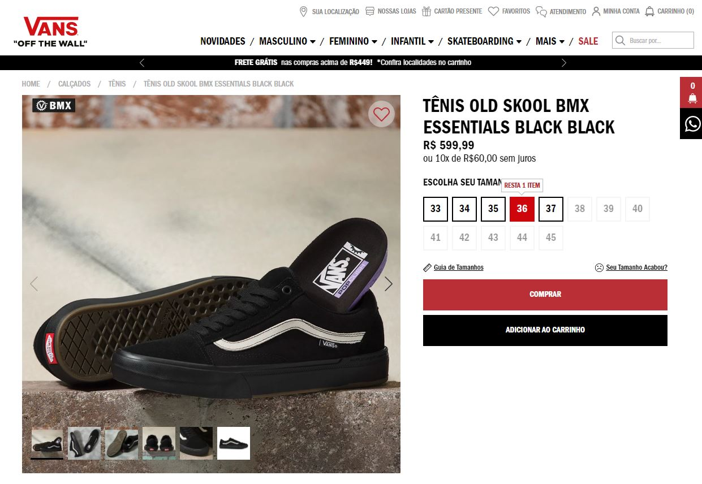
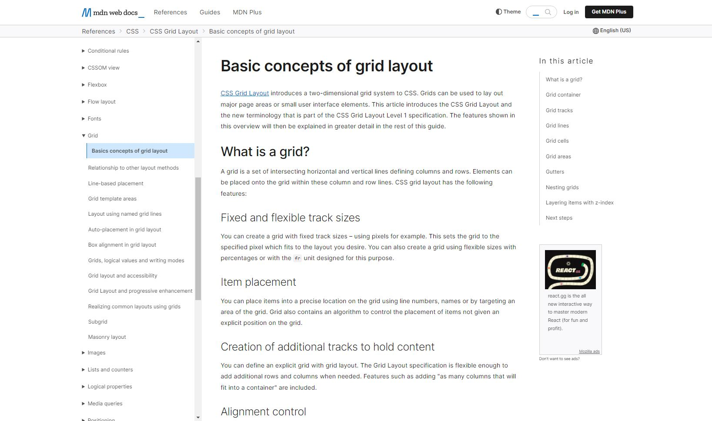

In this website, it's seen the Repetition principle applied. First, we have the red color repetead in different parts of the page. And the color black is also used to show repetition.
In other hand, here it's seen a contrast principle between the color pallet. The orange and dark blue colors make contrast between the whole website and give orientation to the reader's look. We first focus in the message that they want us to see.

In this website, the blanck spaces create visual balance and improve readability. Clean design is an approach that emphasizes simplicity, minimalism, and functionality. It uses limited color palette, clean typography, and a balanced layout, as we can see in this website.